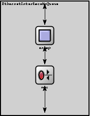
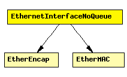

File: NetworkInterfaces/Ethernet/EthernetInterfaceNoQueue.ned
Ethernet network interface. Assumes inifinite queue.
See also: EthernetInterface
The following diagram shows usage relationships between modules, networks and channels. Unresolved module (and channel) types are missing from the diagram. Click here to see the full picture.
If a module type shows up more than once, that means it has been defined in more than one NED file.
| EtherEncap | Performs Ethernet II encapsulation/decapsulation. |
| EtherMAC | Ethernet MAC layer. MAC performs transmission and reception of frames. Doesn't do encapsulation/decapsulation; see EtherLLC and EtherEncap for that. |
| Name | Direction | Description |
|---|---|---|
| physIn | input | |
| netwIn | input | |
| physOut | output | |
| netwOut | output |
| Name | Type | Description |
|---|---|---|
| mac.promiscuous | bool | if true, all packets are received, otherwise only the ones with matching destination MAC address |
| mac.address | string | MAC address as hex string (12 hex digits), or "auto". "auto" values will be replaced by a generated MAC address in init stage 0. |
| mac.txrate | numeric | maximum data rate supported by this station (bit/s); actually chosen speed may be lower due to auto- configuration. 0 means fully auto-configured. |
| mac.duplexEnabled | bool | whether duplex mode can be enabled or not; whether MAC will actually use duplex mode depends on the result of the auto-configuration process (duplex is only possible with DTE-to-DTE connection). |
| mac.writeScalars | bool | enable/disable recording statistics in omnetpp.sca |
| encap.writeScalars | bool | enable/disable recording statistics in omnetpp.sca |
module EthernetInterfaceNoQueue gates: in: physIn, netwIn; out: physOut, netwOut; submodules: mac: EtherMAC; parameters: queueModule = "", txQueueLimit = 100000; // prevents overflow in bogus simulations display: "i=block/rxtx;p=100,160;q=txQueue"; encap: EtherEncap; display: "i=block/square;p=100,80"; connections: netwIn --> encap.upperLayerIn; netwOut <-- encap.upperLayerOut; encap.lowerLayerOut --> mac.upperLayerIn; encap.lowerLayerIn <-- mac.upperLayerOut; mac.physIn <-- physIn; mac.physOut --> physOut; endmodule